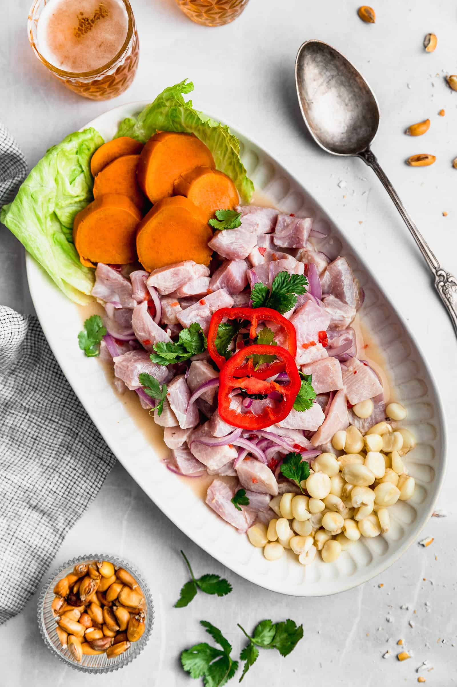

Ceviche Recipe

How To Make Peruvian Ceviche
Peruvian ceviche is a bright, zesty dish of fresh raw fish “cooked” in a marinade of freshly squeezed lime juice, sliced red onions, aji peppers, and cilantro. It’s traditionally served with sweet potato, corn kernels, and cancha (toasted corn), creating a balance of tangy, spicy, and savory coastal flavors.
Ingredients
- 2 fresh fish fillets (e.g. around 500g red snapper, sea bass or sole)
- 1 Red onion
- 1 Chilli pepper
- 6-8 limes
- 2 garlic cloves
- 25g fresh coriander
- 3 cm fresh ginger root
- 1 cup of ice
- 1 medium sweet potato
- Salt & Pepper
Optional Ingredients
- 2-3 cooked king prawns
- 2 tbsp Aji Amarillo paste
- 1 tbsp Rocoto Chilli paste (or use 1 tbsp Cholula sauce)
Steps
- First things first. Take a moment to read through the steps before starting, and make sure you’ve got all the ingredients and equipment ready.
- Cut your fish with a sharp knife in fillets, remove skin and bones and chop in small cube bites. If your fishmonger is happy to do that for you, skip this step. Put the fish back in the fridge until the marinade is prepared.
- I like to serve ceviche mixed with other seafood (called "ceviche mixto"), usually prawns or octopus. Skip this step if you are not using any of these. Otherwise, peel, cook (boil) and slice the prawns/octopus into 0.5 cm thin discs and set aside until serving.
- Cut the chilli lengthwise, remove seeds and veins (can be very spicy) and slice in small dice. Cut the red onion in half, remove the core (save it, we will use it later on) and slice the rest into thin julienne-style stripes. Soak the slices in salt and vinegar water until you are ready to serve (this will reduce their intensity). Cut and set aside the stems off the coriander and finely chop the leaves for the garnish.
- In a big bowl, squeeze the limes using both hands; try not to press the lime vigorously as it will affect the acidity. Acidity is important for “cooking” raw fish. The number of limes in this recipe should give you almost one cup of juice.
- Pour the juice into the blender (or food processor) and add a cup of ice, the onion cores, a clove of garlic, pinch of salt and pepper. Blitz until smooth.
- Add the coriander stems into the blender and whiz one more time, just enough to break them lightly and juices to incorporate.
- Pass the blended mixture through the sieve back to the bowl. If using ginger, peel it and slice it roughly. Press the slices in the mix with a pestle to squeeze out some juice for 30 seconds and strain through the sieve again. Discard the ginger slices. Taste and adjust the salt to your liking. This is your ceviche marinade.
Optional Steps
- Some restaurants infuse the marinade with a very tasty Aji Amarillo pepper sauce, and call the marinade "tiger milk". That can be achieved by adding 2 tbsp Aji Amarillo paste and 1-2 tbsp Rocoto Chilli paste. This ceviche tastes great anyway so these pastes are only optionally suggested.
- Toss the fish into the marinade bowl, top it with the onion stripes, diced chilli and finely chopped coriander leaves and leave it in the fridge to soak for around 45 minutes.
- While the fish is "cooked", you can boil a sweet potato and cut it into cubes or use an avocado instead if you are in a rush to serve. You can be creative here using other fruits like mango or cherry tomatoes too. Optionally, when the sweet potato is boiled and sliced, some chefs caramelise it in a pan using orange or passion fruit juice with a couple of tbsp sugar which makes it incredibly tasty.
- Serve the fish with the prawns, potato or avocado/tomato garnish, chopped coriander leaves, diced chilli, and some onion slices and 2 tbsp from the marinade per serving.
Homepage